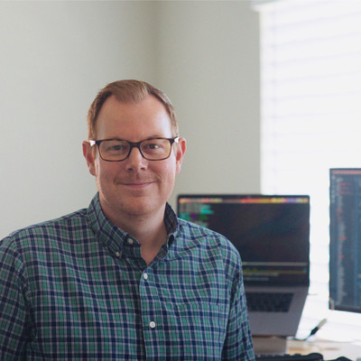

Since 2005, I have been practicing software engineering in a wide variety of domains in the private and public industries.
During the earilier part of my career, my focus was in the field of scientific computing at the National Radio Astronomy Observatory (NRAO) and National Institute for Computational Sciences (NICS) located at Oak Ridge National Lab. While at the NRAO, I worked on projects that involved data analysis of astrophysical observations in the radio spectrum, monitor and control systems for the world's largest fully movable telescope, an advanced telescope scheduling system that factors in weather forecast to maximize optimal science, and more. During my time at NICS, I worked in the High Performance Computing Operations group which ran the National Science Foundation’s first petaflop supercomputing system (the Kraken).
In 2013 began working in the private industry focusing on web / mobile application development, data analysis pipelines, large data business intelligence applications, and open source / enterprise data science tools and platforms.
I currently work at the Center for Machine Learning at Capital One, where I lead a team of engineers building Machine Learning Tools and Platforms leveraging and contributing to open source software projects.